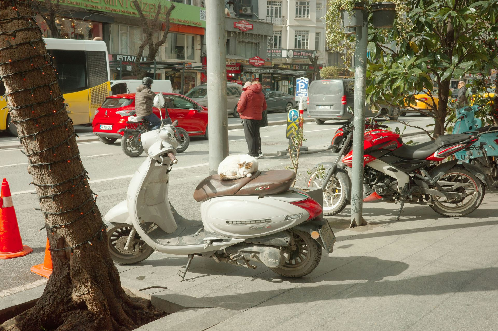
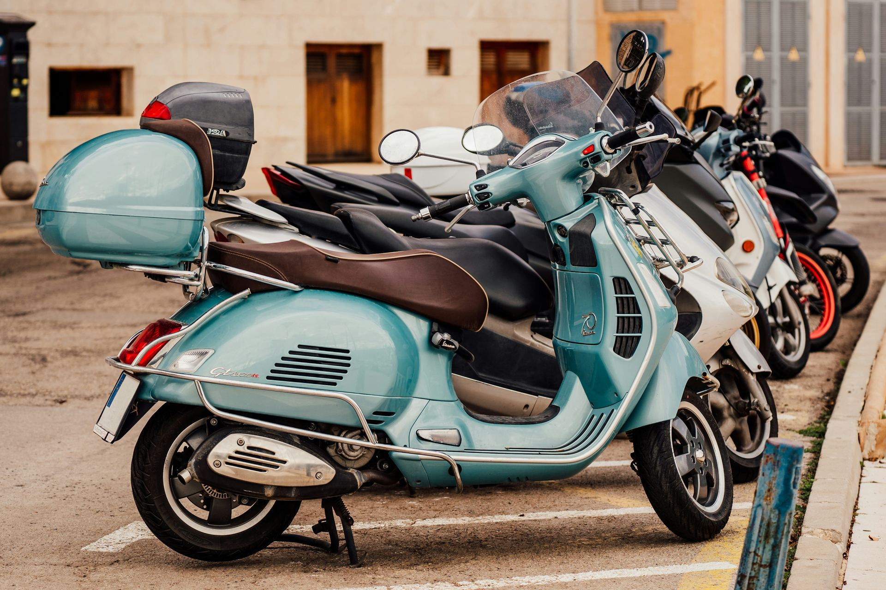
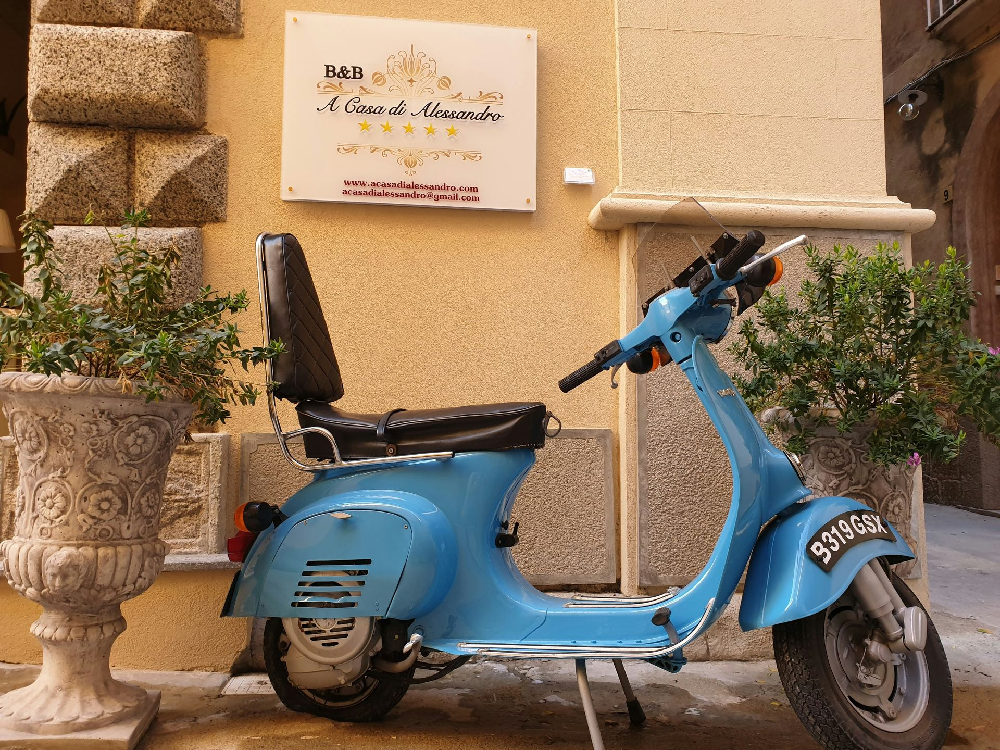

SAFETY / 4 MIN
The sixty-second pre-ride check.
Helmet fit, tyres, lights and the few things worth checking before every start.
Read story →Short reads about city riding, rental choices, safety and making everyday journeys feel simpler.

The best ride choice depends on where you are going, how long you need it and what the return looks like. This guide breaks the decision into a few practical checks.
Read the full storyMatch the ride to the length of the trip.
Hourly, daily or weekly changes the value.
Know the handover point before you start.
Quick, useful stories built around the questions riders actually have before a trip.

Helmet fit, tyres, lights and the few things worth checking before every start.
Read story →
A simple way to choose by distance and road type.

What to check before handing the vehicle back.
Good city riding is mostly anticipation. Scan ahead for doors, turns, crossings and surface changes before they become urgent.

Choose a scooter or bike, compare the rental duration and make the next trip yours.